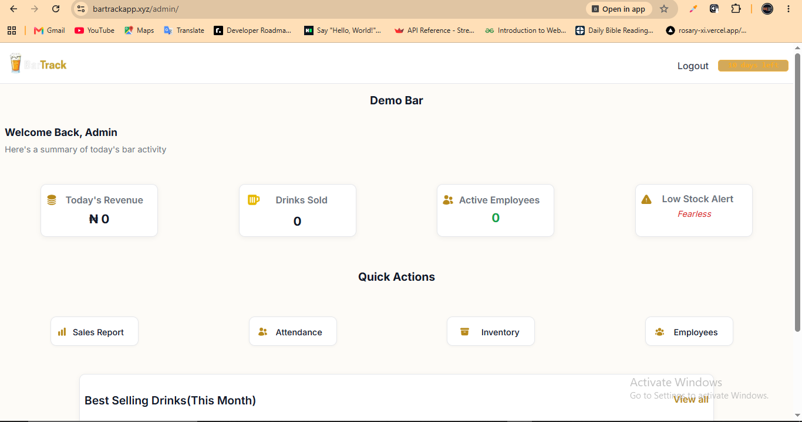

FEATURED PROJECT · FULL-STACK WEB APPLICATION
BarTrack
BarTrack is a web-based management application designed for bars to manage inventory, sales, employee attendance and day-to-day operations from one centralized platform.
I independently designed, developed and deployed the application, including its database architecture, authentication system, role-based permissions, inventory workflows and sales logic.
Key Features
Inventory Management
Track drinks across bottles, packs, cartons and crates.
Sales Tracking
Record sales and automatically update available stock.
Role-Based Access
Separate permissions for different operational roles.
Employee Attendance
Track staff clock-in and clock-out activity.
Low Stock Alerts
Identify products approaching their defined stock thresholds.